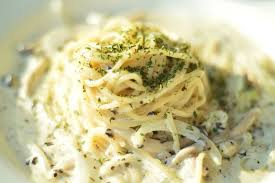

Butter Noodles

Description
Buttered noodles are simple to make with your favorite pasta, butter,
Parmesan cheese, salt, and pepper for a quick and easy, kid-friendly
dish. Fresh herbs and a little lemon juice could be added to amp up the
flavor.
Ingredients
- 1 (16 ounch) package fettuccine noodles
- 6 teaspoon butter, cut into pieces
- ⅓ cup grated Parmesan cheese
- salt and ground black peper to taste
Steps
- Gather all ingredients.
- Fill a large pot with lightly salted water; bring to a rolling boil.
- Stir in fettuccine, bring back to a boil, and cook pasta over medium heat until tender yet firm to the bite, 8 to 10 minutes.
- Drain; return pasta to the pot. Stir in butter, Parmesan cheese, salt, and black peper until evenly combined.